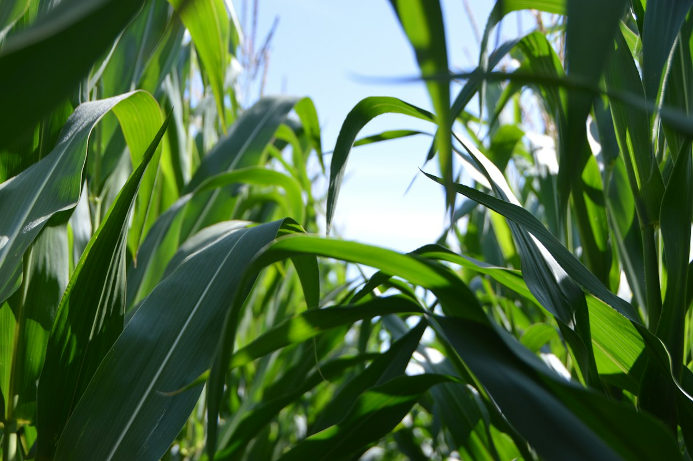

Moon Salad Trials Say More About the Chamber Than the Crop
Three promising crops in a growth chamber tell us about controlled-environment hardware. The edible yield, the repeats and the failure log are still missing.

What a headline can carry
A supermarket strawberry arrives at the counter already bruised on one shoulder. The clamshell lid takes a patch of skin off on the way to the table. The calyx tears where it dried, and the fruit underneath tastes like water with an opinion about red. That soft red object is what the newest deep-space food report asks readers to care about.
Phys.org carried the story on 2026-11-27 under a promise: strawberries, cucumbers and lemon basil look good for future Moon and Mars menus. That is the entire factual payload available to a reader who has not seen the underlying study. Everything below is analysis built on that one sentence, and it is offered as analysis.
A report that three salad crops grew well in a chamber is a report about controlled-environment hardware. The plants are test articles. The menu framing is the part that earns the coverage. The engineering question is whether a crew could learn that something had gone wrong before the leaves yellowed. A crop answers that faster than a probe bolted to the wall.
Why salad crops make good instruments
Wheat, soy and potato are what a calorie budget would choose. A cereal grain and a tuber store their harvest in a form that waits. Neither one arrives on a plate in a shape a tired person wants at the end of a long shift. The salad list runs the other way. It buys turnaround and aroma.
The three names share one property that the report does not state and a reader can check anyway. A strawberry fruits inside a season. A cucumber vine runs and starts cropping within weeks of sowing. Basil gives usable leaf faster than either of them. Quick turnaround is what an engineer wants from an instrument rather than what a ration wants from a shelf.
The arithmetic nobody enjoys
Fresh biomass is a poor way to move calories across real distance. Water is the reason, and a fresh salad is mostly water. A bag of dried food carries the same energy in a fraction of the mass. It asks for no lamp, no reservoir and no share of a crew member's afternoon. Anything grown in orbit or on a regolith has to beat that statement, and a three-crop trial does not try to. That is a hard race.
So the value of a chamber crop has to sit somewhere other than calories. The obvious candidates are the ones a mass budget never lists. One is the vitamin that a stored ration loses first. Another is what a green, growing thing does to a crew on a long stay. Neither is a calorie, and both are the reason the work keeps getting funded.
The strongest case against this reading
A fair opponent would say the menu framing is not decoration. If a crop cannot be defended as food, it will not be built. If it is not built, nobody learns what it costs to run. On that argument, calling a test article a dinner is the cost of getting the hardware built. The same water and light feed every crop in the chamber. A rig that fails a strawberry will fail the rest.
That argument holds until the funding and the claim drift apart. A menu headline invites a reader to expect salad on the Moon, and the trial has almost certainly not earned that expectation. The gap is where public trust in space programs gets spent, and the cost lands on the reader. Nobody is at fault here. The genre is behaving exactly as it was built to behave.
What a fruiting plant asks of a ship
Of the three names, the strawberry is the engineering problem and the cucumber is the space problem. A strawberry is a perennial that sends runners, and a runner is a plant spending energy on something the grower did not ask for. A cucumber vine keeps growing upward until something stops it, which is a good habit in a greenhouse and a poor one under a ceiling. Basil is the easy one.
Then there is the fruit itself. In the botanical sense a strawberry is a swollen receptacle carrying its seeds on the outside. Nothing about that matters to a crew. Everything about it matters to a breeder. The traits that make a berry survive a supermarket are the wrong traits for a vessel where nothing is replaceable. Lemon basil, though, does not need to set fruit at all. It is harvested as leaf, which makes it the least demanding of the three and the least showy.
What was never measured here
The listed source is a single secondary item, and it does not name the institution or the chamber. It gives no cultivar, no cycle length and no yield figure. Without those, nobody outside the project can say whether the result is a harvest or a handful of leaves. That is normal. The distance between a growth-chamber report and a menu is mostly logbooks, and logbooks do not photograph well. Those gaps are checkable.
A trial becomes a food claim only when someone reports how much edible product came out and what the repeat structure was. None of that appears in the item available here, and a reader should hear the word promise in that headline as the hedge it is. Promise is a laboratory-grade word. It means only that the biology cooperated, and the report does not say how many times.
Programs keep growing plants because the alternative is a vitamin tablet and a sealed bag of something green. Neither of those is a meal anyone looks forward to. The psychological case is real, and it is also the case that no instrument measures it well. A crew that likes the greenhouse is a different claim from a crew that is fed by it, and the two get merged in the same photograph.
The hardware is the finding.
How to read the next report
When the same program reports again, look for four things before reading any menu language. A named cultivar. Harvest mass per plant, with the unit and the number of repeats. Whether pollination happened by hand, and how much crew time it took. And the failure log, because the interesting sentence in a closed-loop crop trial is the one describing what killed a tray.
Those four items would let an outsider decide whether the strawberry earned its lamp. Two of them are boring, and boring is exactly what a reader should demand from a food system meant for another world. If the next report carries harvest mass and a failure log, the promise in this headline will have moved a real distance. If it carries a salad photograph instead, the reader has learned about the press office, and nothing else.